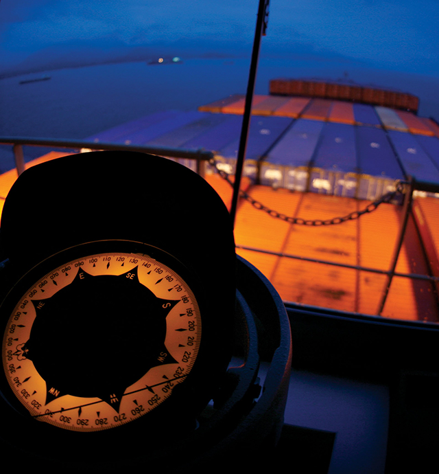
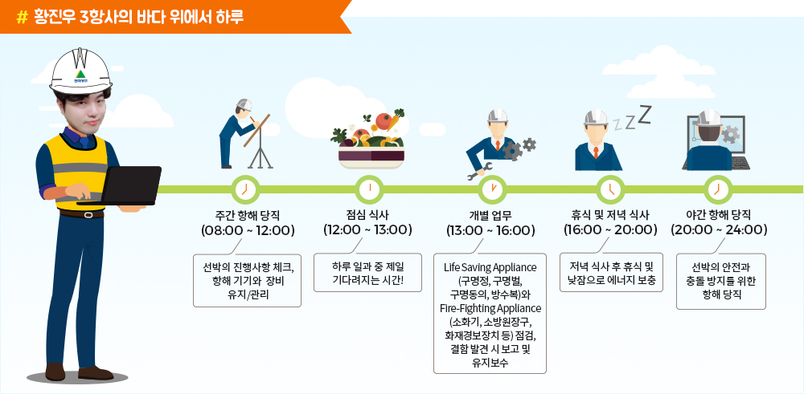
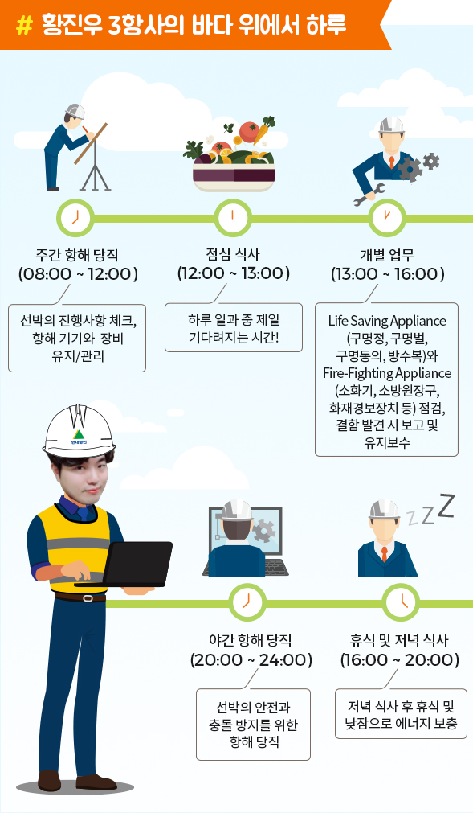
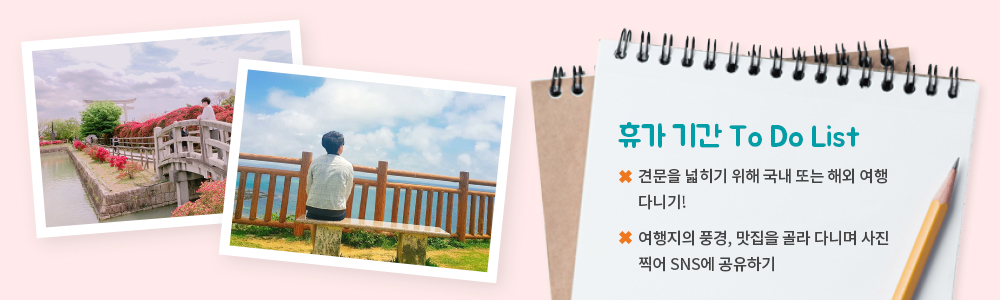
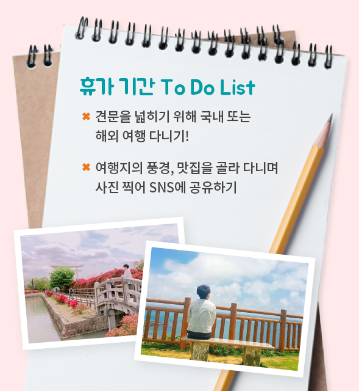
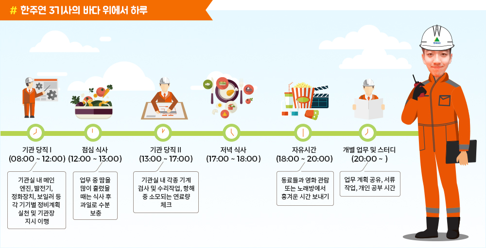
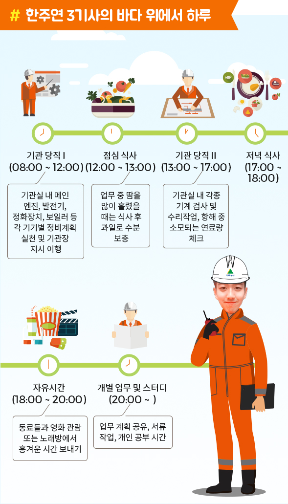
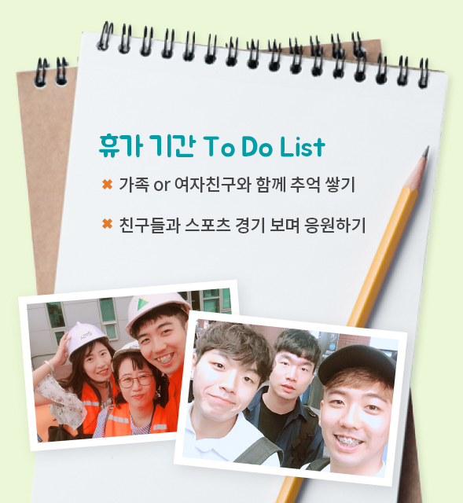

와 제 롤모델이 잡스에요!!! 아이폰 첫 출시되고 나서부터 계속 아이폰 쓰고 있는데 잡스가 너무 그리워요ㅠㅠ 지금은 돈만 벌려고 하는 것 같아서 디자인 발전도 없고ㅠㅠ와 제 롤모델이 잡스에요!!! 아이폰 첫 출시되고 나서부터 계속 아이폰 쓰고 있는데 잡스가 너무 그리워요ㅠㅠ 지금은 돈만 벌려고 하는 것 같아서 디자인 발전도 없고ㅠㅠ와 제 롤모델이 잡스에요!!! 아이폰 첫 출시되고 나서부터 계속 아이폰 쓰고 있는데 잡스가 너무 그리워요ㅠㅠ 지금은 돈만 벌려고 하는 것 같아서 디자인 발전도 없고ㅠㅠ와 제 롤모델이 잡스에요!!! 아이폰 첫 출시되고 나서부터 계속 아이폰 쓰고 있는데 잡스가 너무 그리워요ㅠㅠ 지금은 돈만 벌려고 하는 것 같아서 디자인 발전도 없고ㅠㅠ와 제 롤모델이 잡스에요!!! 아이폰 첫 출시되고 나서부터 계속 아이폰 쓰고 있는데 잡스가 너무 그리워요ㅠㅠ 지금은 돈만 벌려고 하는 것 같아서 디자인 발전도 없고ㅠㅠ
HMM 인사이드
해상직원의 일상,
그것이 알고 싶다
그것이 알고 싶다
오늘도 안전한 운반과 수송을 위해 바다를 항해하는 현대상선의 해상직원. 바다 위에서 해상 운송을
책임지는 그들의 승선 후 일상과 휴가 기간은 어떤 모습일까? 지금부터 해상직원의 일상을 낱낱이 살펴본다.
책임지는 그들의 승선 후 일상과 휴가 기간은 어떤 모습일까? 지금부터 해상직원의 일상을 낱낱이 살펴본다.



황진우 3항사(HMM Promise)
얼마 전 취항식을 갖은 HMM Promise호에 승선을 했다. 현대상선에서 처음으로 남미 NE2 노선에 투입한 첫 사선이기에 승선 전부터 무척 설레고 기대되었다. 왠지 미지의 땅으로 가는 것 같은 느낌이랄까?
항해사의 가장 기본적이면서 가장 중요한 업무는 항해 당직이다. 오전 8시부터 12시까지 그리고 오후 8시부터 12시까지 하루 8시간씩 수행하고 있다. 선박의 안전과 충돌 방지를 위한 정말 중요한 업무이다.
주말을 제외한 평일에는 오후 1시부터 4시까지 항해당직 외의 업무를 수행하며, 특히 내가 담당하고 있는 Life Saving Appliance(구명정, 구명벌, 구명동의, 방수복 등)와 Fire-Fighting Appliance(소화기, 소방원 장구, 화재경보 장치 등)를 점검한다.
이때, 결함 사항이 발견되면 보고 후 유지보수를 시행한다. 사고로부터 선원의 생명과 선박의 안전을 지켜줄 장비들이니 더 꼼꼼히 살피고 있다. 그 외에 항해일지(Log Book) 정리 및 기타 서류 업무, 1항사 보조 등의 업무를 한다.
이후 평일 휴식시간에는 주로 운동을 하거나 낮잠으로 부족한 잠을 보충하면서 야간 항해 당직을 준비한다. 주말에는 영화나 예능을 보거나 다른 선원들과 함께 게임을 하며 시간을 보내고 있다. 더 다양한 활동을 하고 싶지만, 선상이라는 특수성 때문에 다양한 활동을 할 수 없는 점이 아쉬운 부분이다.
짧게는 3개월 길게는 6개월 정도의 승선 생활을 마치면 약 1~2달 정도의 휴가가 주어지는데, 보통 이 기간에 혼자서 해외나 국내여행을 떠난다. 여행이라는 것이 시간적으로나 금전적으로 여유가 뒷받침되어야 하기 때문에 이점에서는 해상직원이 갖는 가장 큰 장점이라고 생각한다. 그래서 되도록이면 휴가의 절반 이상을 여행하는 데 시간을 보내려고 한다. 또 풍경, 음식 사진 찍는 것을 좋아해 여행지, 맛집을 골라 다니며 사진을 찍고 SNS에 공유하며 휴가를 보낸다. 문득 나와 같은 항해사들은 각자 어떤 방법으로 휴가를 보내고 있는지 궁금해진다.




한주연 3기사(현대 포스호)
사실 3등 기관사는 무엇이든 다 해보려고 노력해야 하는 신입사원과 비슷하다. 잘하면 당연히 좋겠지만, 아직 선박이라는 근무환경이 낯설기도 하거니와 월급을 받는 만큼 열심히 일하고 싶지만 의욕에 못 미칠 때가 많다. 의욕이 앞서는 순간, 사고 날 확률이 가장 높다는 것을 아는 선기장을 비롯한 모든 사관이 걱정하는 존재가 바로 3등 항해사와 기관사가 아닐까 싶다. 기관사는 선박의 추진을 담당하는 메인 엔진을 비롯하여 발전기, 청정기, 보일러 등 수많은 기계들을 작동 및 유지/보수하는 일을 담당하고 있다. 각 직급별로 담당하는 기기가 정해져 있으나 실상은 그런 구분 없이 일을 같이 하는 경우가 많다. 왜냐하면 한정된 인원으로 정해진 시간 안에 맡은 일을 빨리 처리해야 하기 때문이다.
그렇게 일과가 끝나고 나면 가장 기다려지는 시간이 바로 식사 시간이다. 우리 회사는 다른 회사에 비해 식사가 매우 잘 나오는 편이다. 그래서 식사 시간이 더욱더 기다려진다. 저녁 식사가 끝나면 보통 다같이 모여 영화를 보거나, 노래방에 가서 노래를 부르고, 작업 계획에 대해 간단히 회의를 한다. 지금까지 이런 일상의 반복이 ‘진짜’ 승선 생활이 아닐까 생각한다.
많은 사람이 ‘휴가 때 보통 뭐 하냐’고 묻는다. ‘저는 가족과 보통 집에서 지냅니다’라고 말하면 처음에는 다들 이해하지 못한다. 주변 사람들은 ‘월급이 적은 것도 아니고 젊은 나이에 여행도 다녀보라’고 말한다. 물론 나도 여행도 다니고 싶고, 한번쯤은 돈도 흥청망청 써보고 싶은 마음이 조금은 있다. 하지만 아버지가 돌아가신 지 이제 막 1년 6개월이 지났다. 내가 아버지의 빈자리를 대신할 수는 없겠지만, 최대한 어머니가 외로움을 느끼지 못하도록 그동안 월급을 모아 이사도 하고, 정든 가구도 바꾸면서 시간을 보냈다.
‘어린 나이에 가장이 되니 어깨가 무겁지만, 그래도 나에게는 결혼할 친구가 있어서 많은 위로가 된다. 여자친구도 직장을 다녀서 함께 여행가는 것이 쉽지 않아, 주말에 시간을 내서 틈틈이 추억을 쌓고 있다. 이번 휴가 때는 여자친구를 따라서 같은 색으로 머리 염색도 하고, 처음으로 워터파크에서 즐거운 시간을 보내기도 했다. 특히 이번에는 고등학교 친구들과 함께 한국 VS 독일 월드컵 경기 거리 응원전에 참여했는데, 색다른 휴가를 보낸 것 같아 기억에 남는다.

-
최고예요
322
-
좋아요
322
-
슬퍼요
322
-
그저 그래요
322
-
화나요
322